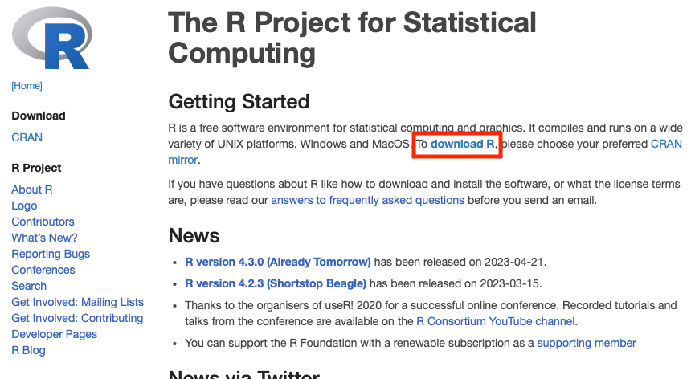
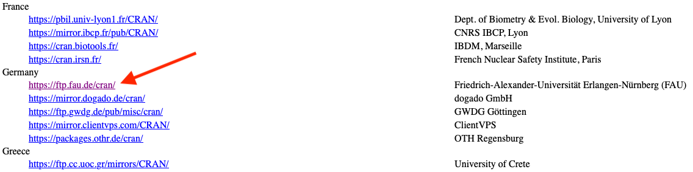
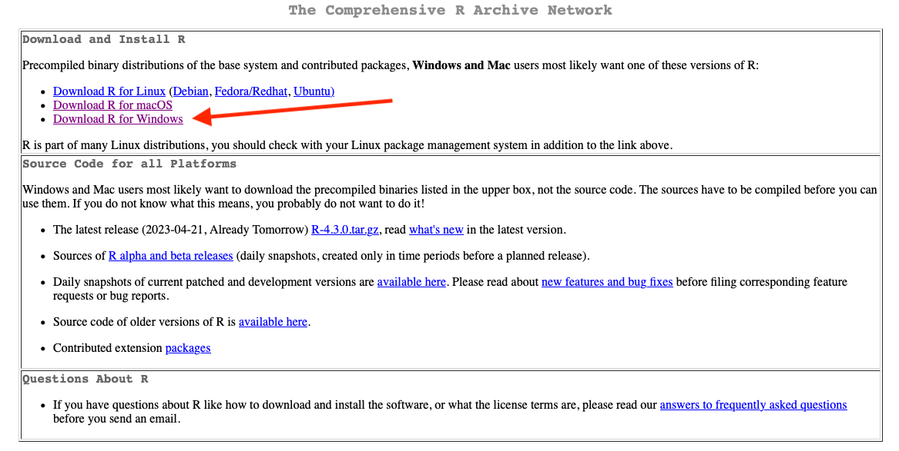
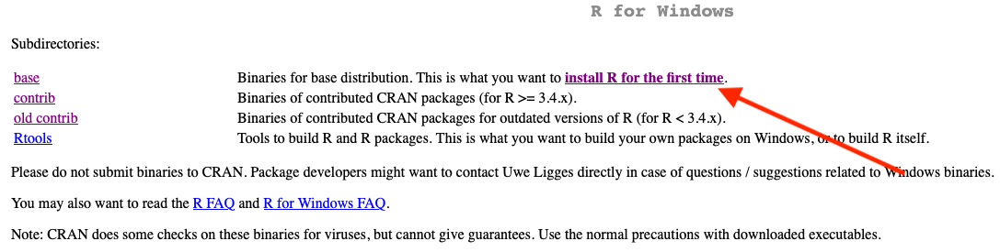
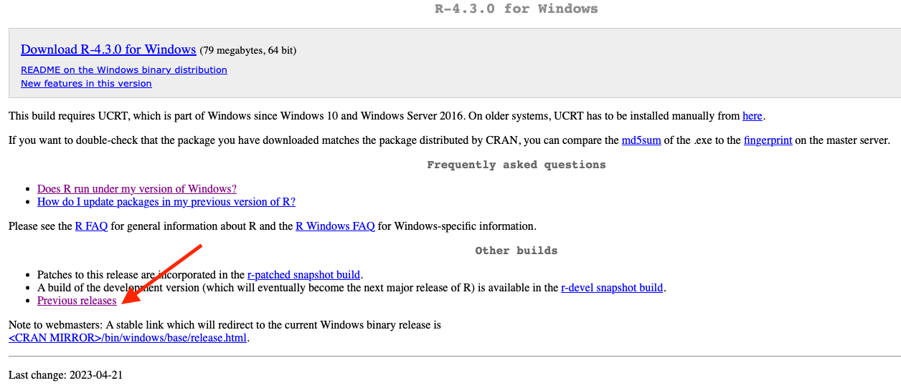
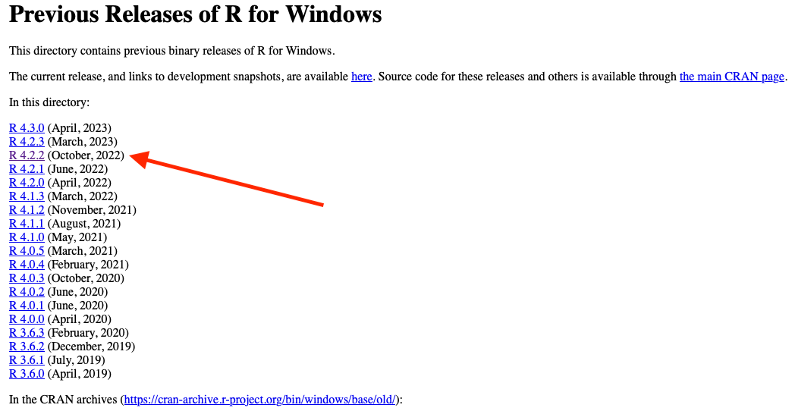
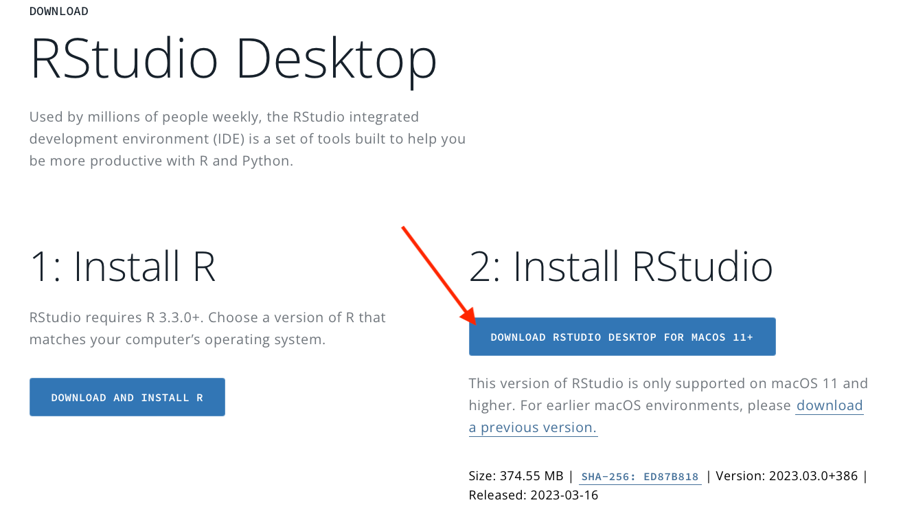
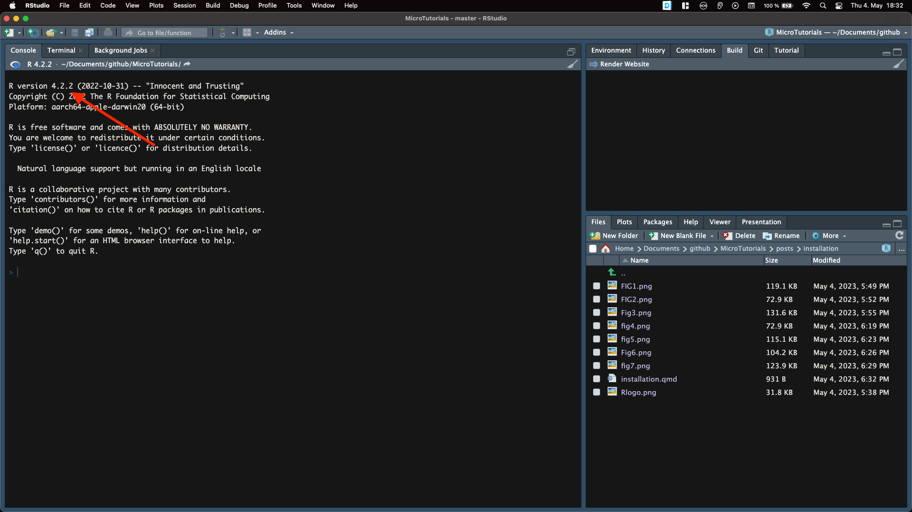

What is R?
R is a free programming language and software environment that is broadly use for data wrangling, statistical computing and graphical representation. It can be run on a wide variety of UNIX platforms, Windows and MacOS.
The R project is a collaborative effort between the R developers and its community. Every R user can develop its own packages to run in the R environment and solve different problems or necessities. R is quite powerful but it can be challenging to use. Because of that we used R-studio, which is an integrated development environment (IDE). This IDE includes a console, syntax-highlighting editor that supports direct code execution, and tools for plotting, history, debugging, and workspace management.
Please follow the following guide to install R and R-studio.
Installing R
- Go to The R project website and click on download R.

- Next, select a repository that is preferably located in the country that you are currently residing.

- After, select the the operating system (OS) that you have in your machine. For the following example, I will show the steps for the windows OS, however the instructions for the other OS are quite similar.

- Here you can click on “install R for the first time” or “base”.

- I usually do not install the last version available, in this case R-4.3.0. I prefer to to install a previous version, which would not have compatibility issues with some of the libraries or packages that I currently use. Go and click on “Previous releases”

- Select the version R-4-2.2, which have been stable during the last year. Go ahead and download the .exe file and install it. After, follow the basic installation. I recommend you to install R in English not in German. If you are in a MacOS machine be aware that there are different versions for the intel-based Macs and arm-based macs.

R-studio installation
- After a successful R installation, we need to install the RStudio IDE. Go to R-studio website and click on “Donwlad RStudio desktop”. You can download the last version available of RStuio, follow the basic installation. I recommend you to install RStudio in English not in German.

- Finally, open RStudio and check in the console that the correct version of R is running under the hood.
Now Enjoy!!!!!!!!! 😀
